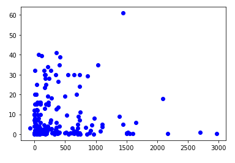
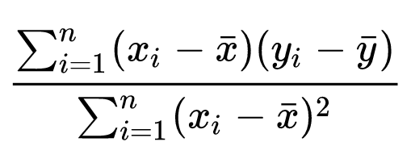

We can make sense of a large quantity of data by combining graphical representations of the data with mathematical measures of the data as a whole.
For this assignment, we are examining linear regression applied to a corpus of botanical data to mark the correlation between the height of plants and four independent variables.
The GitHub repository containing this entire website and all source code is linked here.
Using results from statistical analysis of this plant data, we will explore the concepts of scatter plots, a line of best fit, standard error, and R-squared values.
The Jupyter notebook used for all data analysis and visualization has been exported as an HTML document here, and is embedded below.
As seen above, scatter plots are a visually intuitive representation of discrete data, where the dependent variable is plotted on the x-axis, while the independent variable is plotted on the y-axis.
Below is the scatter plot of the correlation between plant height (in the x-axis) and the plant's altitude (plotted on the y-axis):
In this case, we calculate a line of best fit through a least-squares polynomial regression of degree one, which is to say, a single line approximating the trend of the data.
This is equivalent to what Wikipedia calls a "simple linear regression", which is a line that has both a height and a slope: they helpfully provide the following formula for the slope:
The y-intercept of this line (its "height") in question is the average y-value of all data, in order to plot the actual line (if this were to be done by hand).
The standard error of a set of data, in this context, is an indicator of the data's variance from a both the line of best fit and from the average y-value of all data. Data that is scattered and does not correlate clearly along a line of best fit indicates that the dependent variable does not change significantly with changes in the independent variable.
The R-squared value of a set of data notes how close a line of best fit gets to the data in general, providing a numerical value for that level of correlation. An r-squared value can be derived from 1-(standard error of the line/standard error of the average datum).
R-squared values vary between zero and one, where one indicates the strongest correlation. In this case, the highest R-squared value is that representing the relationship between plant height and rainfall, at a value of approximately 0.14.